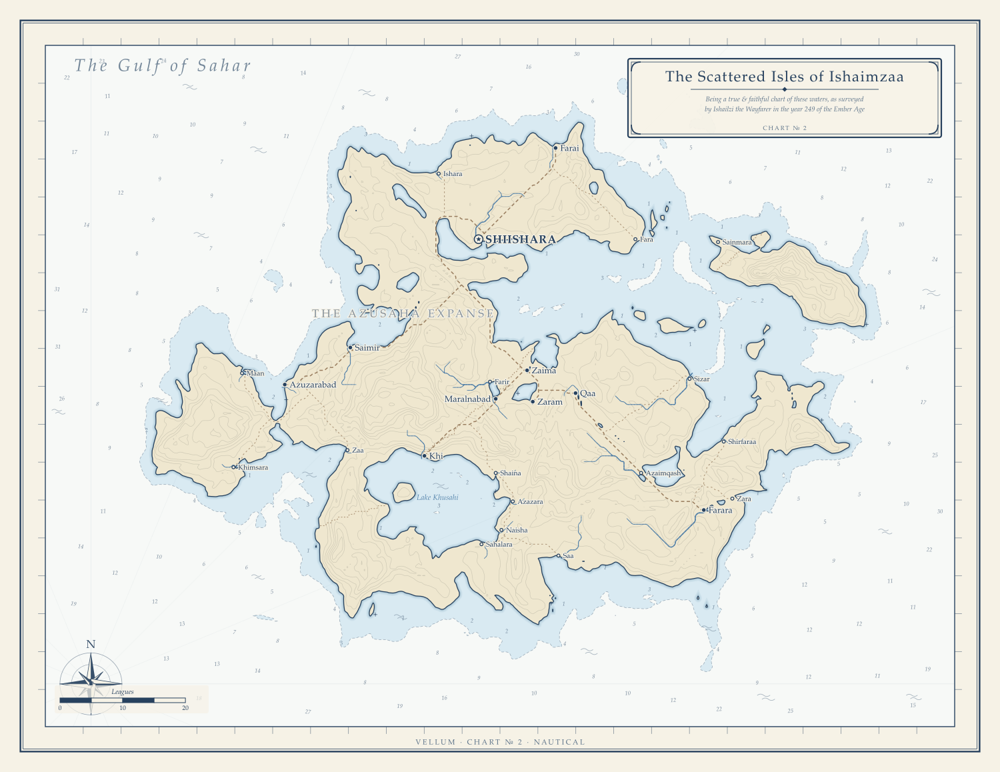

VELLUM
an atelier of imaginary cartography
Vellum surveys worlds that don't exist and drafts them as atlas charts. Give it a seed; it invents an island, simulates the rain that carves its rivers, grows its forests, founds its harbor towns, names everything in one of six invented languages — then sits down at the drafting table and draws the map. Same seed, same world, byte-identical chart.
EVERY CHART REPRODUCIBLE FROM THE NUMBER IN ITS MARGIN

One World, Four Hands


{kind=link}

Go Deeper
The Explorer →
Draw your own: type a seed, pick a style and climate, and the world is drafted live in your browser. Nothing is uploaded.
The Atlas of Rahai →
A bound volume: the world chart in three styles, two regional close-up surveys of the same terrain, and a gazetteer of every settlement with travelers' notes.
A Gallery of Worlds →
Twelve worlds from twelve seeds — archipelagos, islands, and continents, each with its own name, realms, and coastline.
How It Works
Give Vellum a number, called a seed, and it builds an entire world from scratch. First it raises land out of noise: random bumpiness piled up at several scales, then pushed and pulled out of shape so the features wander and swirl instead of repeating in a regular pattern. That distortion is what gives coastlines their ragged, believable look instead of round, blobby islands. Next it runs water downhill until every river finds its way to the sea. A simple climate of temperature and rainfall decides where forests, deserts, and tundra grow. Towns settle where people really would, near sheltered harbors, river mouths, and good soil, and roads thread between them by the easiest route, sharing corridors the way real trade routes do. Borders follow the lay of the land, tracing ridgelines and rivers. Even the place names are invented, drawn from six made-up languages, one per culture. Best of all, it is repeatable: the same seed always draws exactly the same world, right down to the last coastline.
Under the hood: a zero-dependency TypeScript engine, using domain-warped gradient noise for terrain, priority-flood hydrology so every river drains to the sea, a Whittaker-style climate model, Dijkstra least-cost roads, and a single seed feeding fork-labeled random streams for full reproducibility.
Draw your own:
git clone https://github.com/ahl-gram/Vellum then
npm run chart -- --seed 42, or read the
README.